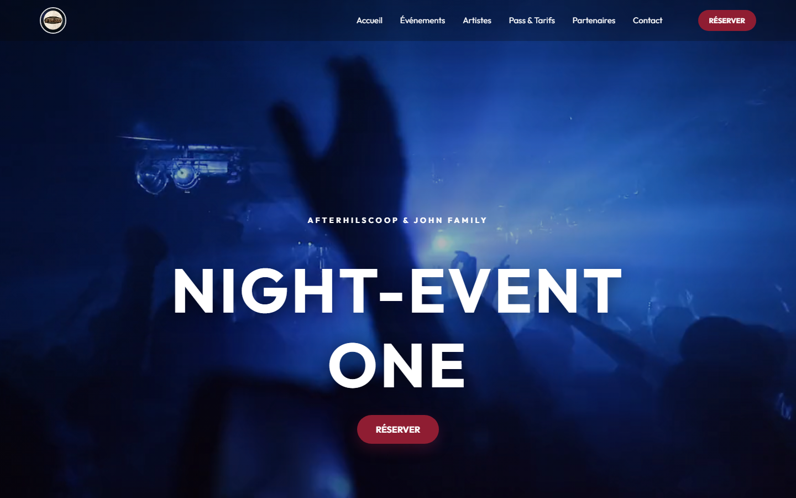

Site web événementiel
AFTERHILSCOOP
Plateforme de présentation et de promotion d'un événement musical, avec les informations utiles aux participants.
- Présentation de l'événement et des artistes
- Pass, tarifs et réservation
- Informations pratiques et communication événementielle
Mon rôle : le site affiche un crédit « Site by Mikin_Dev »; le périmètre exact est à préciser.